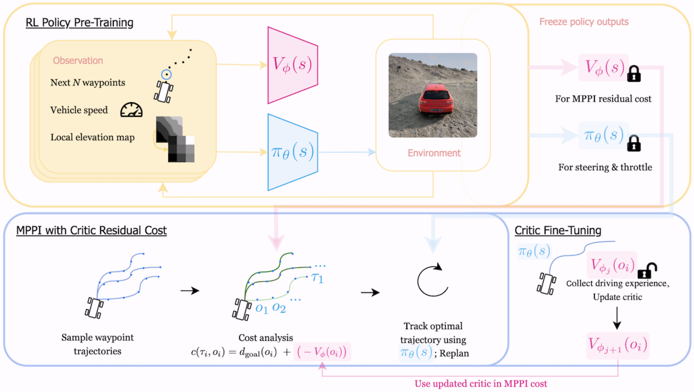
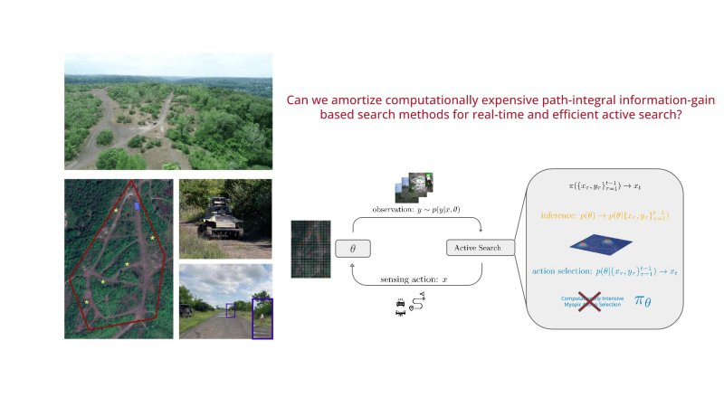

|
Raymond Song I'm a Robotics Researcher at the Robotics Institute at Carnegie Mellon University, where I am advised by Jeff Schneider. My work is focused on building controls and Reinforcement Learning (RL) algorithms for autonomous off-road driving for deployment in the real-world. My research interests are in RL and control that work on physical hardware and robots in the real world. Before I was at CMU, I worked as the deployment and testing lead of AI Racing Tech developing safety-critical software and telemetry systems for a $1.5 million autonomous Indy Car racing at 180MPH. Before that, I completed my undergraduate studies in Data Science at UCSD. Email / CV / Google Scholar / LinkedIn / Github |
{kind=link}
ResearchI'm interested in Reinforcement Learning for robotics in the real world. Some papers are highlighted. |

|
TADPO: Reinforcement Learning Goes Off-Road
Raymond Song*, Zhouchonghao Wu*, Vedant Mundheda*, Luis Ernesto Navarro-Serment, Christof Schoenborn, Jeff Schneider, ICRA 2026 (Oral Presentation) Paper / arXiv Introduces a novel Reinforcement Learning algorithm TADPO, an extension of PPO, to incorporate expert trajectories to train a perception-based off-road driving policy to navigate challenging terrain and achieve real-time performance and adaptive behavior. Deployed the simulation-trained policy zero-shot onto a vehicle with 100% obstacle avoidance in the real world. |
|
 |
Value Function-Guided MPPI for Hierarchical Planning and Control in Off-Road Autonomous Navigation
Anoushka Alavilli, Raymond Song, Guanya Shi, Jeff Schneider, IROS 2026 Paper Guides MPPI planner search with low-level RL controller's value function for bidirectional flow between the planner and control and more effective navigation. |

|
Toward Real-World Autonomous Off-Road Driving with Reinforcement Learning
Raymond Song*, CMU Master's Thesis, 2026 Paper Proposed a novel RL algorithm, TADPO, to tackle sparse reward tasks with teacher action distillation into an on-policy algorithm. Applied TADPO to autonomous off-road driving in simulation and the real world, achieving real-time performance and zero-shot sim-to-real transfer. |
|
 |
Efficient Active Search Via Amortized Path-Integral Policies
Tejus Gupta*, Arsh Verma*, Raymond Song, Dave Guttendorf, Conor Igoe, Luis Ernesto Navarro-Serment, Jeff Schneider, ICRA 2026 Paper Developed amortized path-integral GNN policies that enable efficient and real-time active search for robotic systems. Ran field experiments in a 75,000 m² forested environment using an autonomous ground vehicle, along with simulated testing. |
Miscellanea |
Public Tech Talks |
TADPO: Reinforcement Learning Goes Off-Road, ICRA 2026 Towards Real-World Autonomous Off-Road Driving with Reinforcement Learning, CMU 2026 |
Teaching |
Teaching Assistant, DSC 190: Autonomous Go Kart, UCSD Spring 2024 Teaching Assistant, DSC 190: Autonomous Go Kart, UCSD Winter 2024 Teaching Assistant, DSC 190: Internet of Things, UCSD Summer 2023 |
|
This website template is from here. |